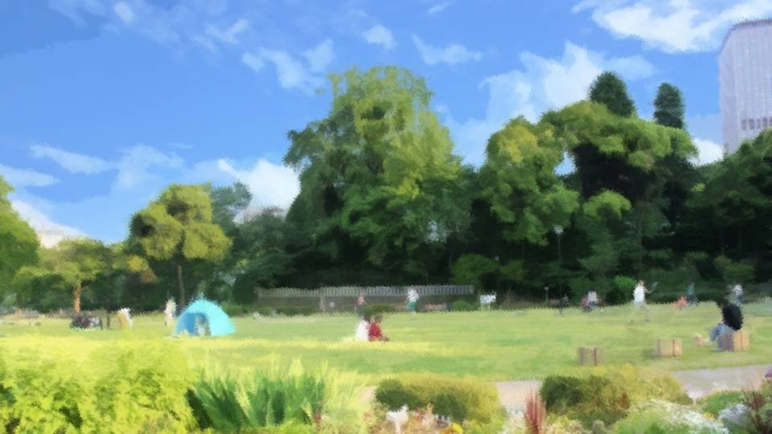
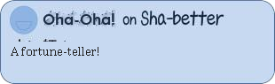
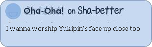
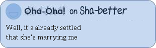
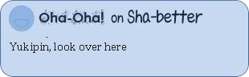
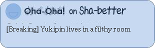
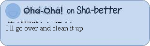
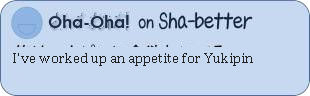
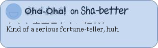
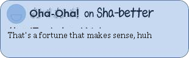

Script 00001D0E

―All right, thank you very much!
And now, our next segment. At this time on Tuesdays, it's 'This Path, I, Master!'
Now, what sort of master will be making an appearance today?
This time we've left the studio, and we're bringing it to you live.
Yuki-chan, at the scene!?

"Yes! I, Yukino Shinbashi, am continuing to report from this park in Katsushika Ward!
Today I'd like to introduce this week's master!
We're told today's master is in a building right by the park, inside this one, but―"
―It's kind of a creepy building...
"Who is this week's master, here inside this suspicious building? I'd like to go in and pay a visit."
―It's kind of a creepy building...
"Who is this week's master, here inside this suspicious building? I'd like to go in and pay a visit."
"Um... good morning.
Where could they be?
My name is Yukino Shinbashi, from Japonica TV."
―It's dim in there. Could it be a medium or something...?
"Oh, take a look, there's a woman in a mask sitting over there."
―It's dim in there. Could it be a medium or something...?
"Oh, take a look, there's a woman in a mask sitting over there."

"Good morning. Are you this week's master!?"
"Good morning. Yes, I'm this week's master... not that I'm anything so grand, but I'm a fortune-teller by the name of Yuko Stella."
"A fortune-teller!"
―A fortune-teller!
"Good morning. Yes, I'm this week's master... not that I'm anything so grand, but I'm a fortune-teller by the name of Yuko Stella."
"A fortune-teller!"
―A fortune-teller!
"Yuko Stella-san, aren't you a celebrity!?"
"No, no, I only show up in a magazine now and then."
"I've seen you in a magazine! If I remember right, they call you an authority on physiognomy."
"Oh, that's overstating it. I just look at people's faces any old way, say any old thing, and it happens to be right, that's all."
"No, no, I only show up in a magazine now and then."
"I've seen you in a magazine! If I remember right, they call you an authority on physiognomy."
"Oh, that's overstating it. I just look at people's faces any old way, say any old thing, and it happens to be right, that's all."


"No, no, you don't become a fortune-teller this renowned any old way.
Today, I understand you'll be reading my face, but―"
"Yes, yes. Well then, have a seat here, please. What do you want to ask about, miss? Love, work, luck with money, anything's fine."
"Um, well then... How do things look for my work from here on?"
Today, I understand you'll be reading my face, but―"
"Yes, yes. Well then, have a seat here, please. What do you want to ask about, miss? Love, work, luck with money, anything's fine."
"Um, well then... How do things look for my work from here on?"

"Work, all right. Then look this way."
"Okay."
"............"
"............"
―............
"Okay."
"............"
"............"
―............
"The world probably knows your work is going well, but that's only the world's assessment.
There's a lot you yourself aren't happy with, isn't there?"
"Things I'm not happy with?"
"The work you want to do... Mm, let's see... It looks like you're content with the work itself, but there seems to be some problem in your private life. What you're not happy with is the private life your work is squeezing."
"Things I'm not happy with?"
"The work you want to do... Mm, let's see... It looks like you're content with the work itself, but there seems to be some problem in your private life. What you're not happy with is the private life your work is squeezing."


"My private life..."
"It's a bit much to say on TV, but your work keeps you so busy, your room's gotten pretty messy, hasn't it?"
"Huh!? Um... I guess so... I might not be keeping it very tidy..."
"You need to take a little more care with your meals, too. You're still young, so it's fine, but right now you seem to have no appetite at all."
"It's a bit much to say on TV, but your work keeps you so busy, your room's gotten pretty messy, hasn't it?"
"Huh!? Um... I guess so... I might not be keeping it very tidy..."
"You need to take a little more care with your meals, too. You're still young, so it's fine, but right now you seem to have no appetite at all."

"I eat three square meals a day, though..."
"Appetite is the urge that says I want to eat that, I want to eat this. Thinking you have to take in the nutrition you need to live is different from appetite. I'm sure you don't think like that."
"Hmm... Yes, I guess... Mostly I just eat the boxed lunches they hand out on location..."
"Appetite is the urge that says I want to eat that, I want to eat this. Thinking you have to take in the nutrition you need to live is different from appetite. I'm sure you don't think like that."
"Hmm... Yes, I guess... Mostly I just eat the boxed lunches they hand out on location..."

"Human beings die without food and sleep.
It's probably a busy job, but first you should try thinking about enjoying your meals.
If your appetite's satisfied, you ought to put just the right amount of effort into your work too."
"I see..."
"First, instead of just eating whatever food you're given, try thinking about what you want to eat. How your work turns out depends on that."
"I see..."
"First, instead of just eating whatever food you're given, try thinking about what you want to eat. How your work turns out depends on that."

"Is there any particular kind of food that would be good?"
"Let's see... Meals you eat with a knife and fork would be good. If you usually eat boxed lunches, you're probably using nothing but chopsticks or a spoon. So, to get away from that all at once, you make a point of trying a knife and fork."
"Ooh...! I understand! Thank you so much! Stella-san, your fortune-telling is like life counseling."
"Let's see... Meals you eat with a knife and fork would be good. If you usually eat boxed lunches, you're probably using nothing but chopsticks or a spoon. So, to get away from that all at once, you make a point of trying a knife and fork."
"Ooh...! I understand! Thank you so much! Stella-san, your fortune-telling is like life counseling."
"That's right. Fortune-telling means giving advice based on statistics,
not just saying the future will go this way or that way.
With all that foreseen, you need to advise the person on what will do them good."
"I'm so glad I got to meet you today, Stella-san! Thank you very much!"
"I'm so glad I got to meet you today, Stella-san! Thank you very much!"
―Well, Yuki-chan, you'll have to put a little less effort into your work.
Now for the next master! The winner of the 90-year-old division at the national sumo tournament the other day―